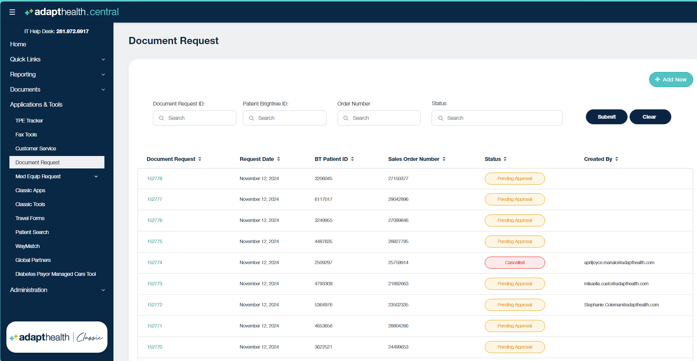

Appointment Scheduled
This is the task of calling Doctor's offices to confirm the appointment schedules of the patient. Upon receiving the information of the appointment date, we call the DO to confirm if the visit was done. We can also check with DO of past appointments date prior to the new one.
"Hi this is Angel from Adapthealth calling in behalf of our mutual patient, (Patient Name) with DOB. I would like to confirm with you on the appointment the PT has recently made with Doctor ( Dr's Name).
If Yes or appt made: “Was it a discussion for the use of (DME equipment)? ”
“We will send a request for a copy of the documents. Can I please have your fax no?
"I appreciate your help on this. Thank you and you have a great day!” "
- Once the appointment is confirmed, you will then send the document request to the provided fax number through the following tools:
*Remember to check if Dr is PECOSCertified and see if he/she is in DNC or DNF
in Aerocare ,
St Lukes
and OHH
- AH Central
- Parachute Health
- GoScripts
- ARM 
- Fax Cover Sheet Sample for O2 Testing
- Fax Cover Sheet Sample for PAP_ BIPAP
- Fax Cover Sheet Sample for Wheelchair
- Fax Cover Sheet Sample for Bed
- Send Fax using AH Central
-
Fax Cover Sheet Examples
-
HOW TO: